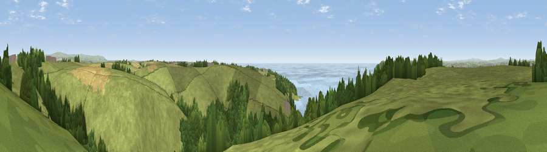

Viewpoint near Down Thomas
#5085 in England · top 11% of its area beats it · near Down ThomasWhere it is
The exact computed spot (SX 49425 50975). Click the marker for map links.
The view, rendered

A 360° render of this exact spot computed from the terrain model, tree cover and land cover — summer colours, afternoon light, calibrated against photographs of famous viewpoints. Real trees, hedges and buildings will differ in detail.
The panorama
Grey silhouette: terrain skyline in each direction (720 bearings, Earth curvature and refraction included). Dashed green: skyline with trees (+15 m) and buildings (+8 m) as obstacles. Blue strip: how far the ground is visible on each bearing.
Where the view opens
Wedge length = distance to the farthest visible ground on that bearing (vegetation-aware). Rings at 10, 25 and 50 km.
What fills the view
50% grassland · 26% water · 19% woodland · 4% cropland ·
Angular shares of the visible panorama (visual magnitude), not map area. Landscape diversity 0.51 (0–1 Shannon).
Key numbers
More beautiful places nearby
The staircase of upgrades: each row has a higher view potential than everything closer. Driving times are estimates from straight-line distance, calibrated against real road routing — check an actual route before setting out.
| Place | Direction | Drive | Score |
|---|---|---|---|
| Viewpoint near Down Thomas | NNE · 1 km | ~2 min | 70.8 |
| Viewpoint near Down Thomas | SSE · 1 km | ~3 min | 75.0 |
| Viewpoint near Newton Ferrers | SE · 5 km | ~11 min | 78.2 |
| Viewpoint near Cawsand | WSW · 7 km | ~15 min | 81.0 |
| Viewpoint near Lee Moor | NNE · 13 km | ~24 min | 82.7 |
| Viewpoint near Downderry | W · 16 km | ~28 min | 83.5 |
| Viewpoint near Hope | ESE · 22 km | ~37 min | 84.4 |
| Viewpoint near East Prawle | ESE · 31 km | ~48 min | 84.6 |
50.33940, -4.11735 · source: screening · position refined by local search. Computed location — check access rights before visiting.